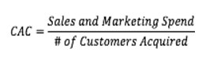
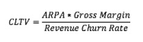
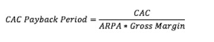

The SaaS Disruption
Software-as-a-Service has fundamentally disrupted traditional software business models. Where companies once deployed expensive on-premise solutions with large upfront licensing fees, SaaS moves software delivery to the cloud — shifting revenue from one-time transactions to recurring subscriptions. This model aligns vendor success directly with customer success, creating powerful incentives for ongoing product improvement and customer retention.
The Hunter and Farmer Model
SaaS organizations typically organize their go-to-market around two distinct roles:
- Hunters (Sales) — focused on acquiring new customers, closing deals, and expanding the top of the funnel. Success is measured by new ARR, pipeline coverage, and win rates.
- Farmers (Customer Success) — focused on retaining, expanding, and delighting existing customers. Success is measured by net revenue retention, NPS, and renewal rates.
The most effective SaaS companies build both functions in parallel, recognizing that retention economics often dwarf acquisition economics at scale.

What Makes a Great SaaS Product
- Delight — the product must create a moment of "wow" that drives word-of-mouth adoption
- Plug-and-play — implementation friction must be near zero; users should derive value immediately
- Sticky — the product embeds itself into daily workflows, making switching painful and unlikely
- Integrable — open APIs and native integrations with the existing tech stack accelerate adoption
The SaaS Metrics Framework
Understanding a SaaS business requires tracking three categories of metrics corresponding to the hunter/farmer model:
Hunter Metrics (Acquisition)
- MRR (Monthly Recurring Revenue) — the normalized, monthly value of all active subscriptions. The foundational SaaS metric.
- CMRR (Committed MRR) — MRR adjusted for known future changes: signed contracts not yet live, known churn/downgrades. More predictive than current MRR.
- CAC (Customer Acquisition Cost) — total sales & marketing spend divided by new customers acquired. Tracks efficiency of the acquisition engine.
- CAC Payback Period — how many months of gross profit are needed to recover the cost of acquiring a customer. Best-in-class is under 12 months.
- New Customers — raw count of new logos closed in the period; leading indicator for future MRR growth.

Farmer Metrics (Retention & Expansion)
- Logo Churn % — percentage of customers that cancel in a given period. Best-in-class is below 5% annually.
- MRR Churn — dollar value of MRR lost to cancellations and downgrades. More important than logo churn because it captures revenue impact.
- CMRR Renewal Rate — the percentage of up-for-renewal CMRR that is successfully retained. A leading indicator of retention health.
- Net Revenue Retention (NRR) — total revenue from existing customers this period versus same cohort last period. Over 100% means expansion exceeds churn — the holy grail.
Other Key Metrics
- ARPA (Average Revenue Per Acquired Customer) — total MRR divided by total customers. Tracks whether you're moving upmarket or downmarket over time.
- CLTV (Customer Lifetime Value) — the total revenue expected from a customer over their relationship. CLTV / CAC ratio should exceed 3x for a healthy business.
- Cash Flow & Runway — months of cash remaining at current burn rate. Critical for fundraising timing and operating decisions.
- Gross Profit Margin — for SaaS, target 60%+ early-stage, 80%+ at maturity. Driven by hosting costs, support overhead, and payment processing fees.

The Unit Economics Test
A SaaS business is fundamentally sound when: CLTV > 3× CAC and CAC Payback < 12 months. Meeting both thresholds simultaneously indicates a business that can efficiently scale — each dollar invested in growth returns multiples and recovers quickly enough to fund continued expansion.
Gross margin targets tell a similar story: early-stage SaaS companies should target 60%+ gross margins, with a clear path to 80%+ as they scale infrastructure costs, reduce support overhead per customer, and leverage pricing power.
Key Takeaway
The SaaS metrics framework isn't just a reporting exercise — it's a management system. When leadership tracks the right metrics consistently, the business naturally optimizes toward efficient growth, strong retention, and durable value creation.